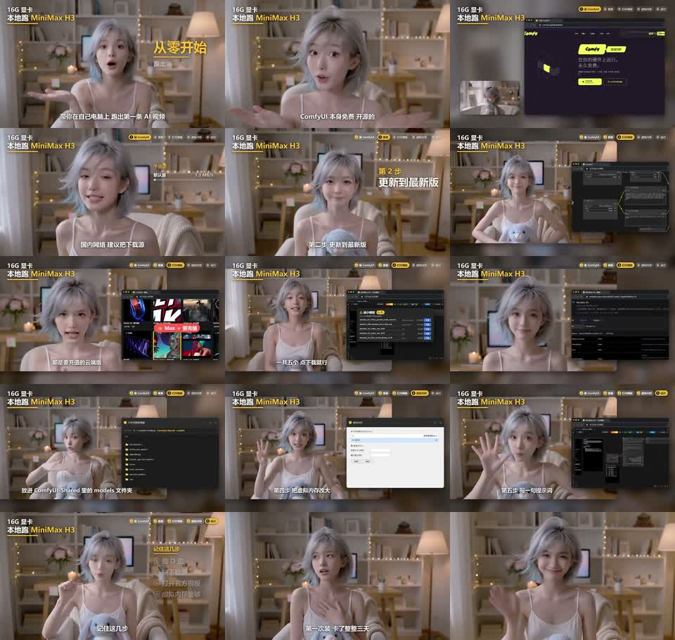

X｜AIVideoHub：用 ComfyUI 在本機執行 MiniMax H3 的入門流程與邊界

一句話摘要
這支約 2 分 27 秒的中文短教學把「本機跑 MiniMax H3」拆成五步：安裝 ComfyUI、更新版本、開啟本機 H3 模板並補齊模型、調整虛擬記憶體、輸入提示詞執行。它適合作為入門流程參考，但不是官方最低規格或完整部署指南。
來源與查核狀態
X 帳號 AIVideoHub_ 在 2026-10-12 發布影片，稱可用本機電腦執行 MiniMax H3。本文保留影片截幀、公開貼文中繼資料與本機語音辨識作為社群來源證據，並另查核 MiniMax 官方 GitHub。
官方 MiniMax-H3 README 確認：
- MiniMax H3 提供本機部署的 H3-Base；它分為 FL2VA 與 Ref2VA 兩個任務型 checkpoint。
- 官方把 ComfyUI 列為建議的推論框架之一，並連向 ComfyUI 的 MiniMax H3 教學與 T2V、R2V 工作流模板。
- 本機 H3-Base 可驗證 768p 產出；官方所稱完整 2K 工作流則結合本機部署與 H3-Context-IR、H3-Regenerate-2K API。
因此，「可在本機執行」已獲官方方向支持；但不能把它延伸為「所有 H3 功能都完全離線、免費、只需一張 16GB 顯卡」的結論。
影片中觀察到的五步流程
以下是影片口述、字幕與截幀可辨識的工作流程摘要，不是逐字官方操作說明：
- 安裝 ComfyUI
- 影片指向 ComfyUI Desktop，並建議安裝於非系統碟。
- 創作者表示模型容量超過 40GB，安裝期間會下載依賴。
- 更新到最新版
- 影片稱 H3 節點已內建於其使用的新版環境，無須另外安裝插件。
- 實際可用節點與版本仍應以 ComfyUI 官方教學及更新紀錄為準。
- 使用本機 MiniMax H3 模板並取得所需模型
- 影片示範從模板區尋找 MiniMax H3 的本機影片工作流，並提醒不要誤選標示為 API 的雲端模板。
- 載入後依缺檔提示補齊模型；影片口述為五個模型檔，並提醒依類型放入 `models` 下對應資料夾。
- 建議優先使用官方 MiniMax-H3 repository、Hugging Face 與 ComfyUI 官方模板，不要把來源不明的模型打包檔直接加入工作環境。
- 調整系統記憶體餘裕
- 影片建議增加虛擬記憶體、關閉瀏覽器與其他吃記憶體程式。
- 這是單一創作者的穩定性建議；變更分頁檔／交換空間會影響系統磁碟與效能，應先確認空間、備份和作業系統設定。
- 撰寫提示詞並執行
- 影片最後以一句提示詞啟動生成。
- 官方 H3 具有文字、首／尾幀與多模態參考等不同輸入模式，應依 T2V、R2V 或 Ref2VA 工作流選擇對應模板。
社群實測數字，不應視為通用規格
創作者自述使用 RTX 5060 Ti 16GB 顯示卡與 32GB 系統記憶體，並表示：模型約 40GB 以上、生成一支數秒影片約需兩至三分鐘。這些只代表其測試環境、版本與設定；影片並未提供可重現的完整版本、解析度、取樣設定、提示詞或效能日誌。
官方 README 此次可查到的部署示例也包括四張 GPU 的 SGLang 服務配置。這不代表單卡不能執行，而是提醒 H3 的可行設定、速度與顯存需求會隨 checkpoint、輸入模式、解析度、工作流與軟體版本大幅改變。
為什麼值得收進 AI 學習雷達
影片的價值不在於宣稱一套保證可行的硬體門檻，而在於提供實務排錯次序：先使用官方框架與模板、讓缺檔訊息指引模型配置、再把系統記憶體與其他程序納入考量。對想從雲端文字生成影片走向本機可控工作流的人，這是一個具體的起點。
同時，MiniMax H3 的架構也示範「開放權重／本機 base model」與「仍需託管服務的增強元件」可以並存。評估成本、資料邊界或離線需求時，必須把本機推論、模型下載來源、外部 API、雲端升級流程分開盤點。
安全且可重現的導入檢核表
- 從 MiniMax 官方 GitHub 開始，確認要使用 FL2VA、Ref2VA 或官方 API 工作流。
- 只採用 ComfyUI 官方 H3 教學與 T2V／R2V 模板；建立獨立環境，避免把不明 custom node 或網盤整包工作流直接混入既有工作區。
- 模型下載前先盤點磁碟空間、顯存、系統 RAM 與交換空間；不要把創作者的 16GB／32GB 視為最低需求。
- 先用低解析度、短片段、官方範例驗證節點與模型路徑，再提升解析度或加入參考影音。
- 若追求官方完整 2K 工作流，先確認 H3-Context-IR 與 H3-Regenerate-2K API 的帳號、費用、資料處理與權限條款；不要誤認為它完全離線。
- 對所有模型與工作流記錄版本、雜湊、輸入、輸出與耗時，才能比較本機配置與更新後的差異。
原始連結
- X 原始影片：https://x.com/aivideohub_/status/2109450698048049539/video/1?s=68
- X 固定貼文：https://x.com/AIVideoHub_/status/2109450698048049539
- MiniMax H3 官方 GitHub：https://github.com/MiniMax-AI/MiniMax-H3
- ComfyUI 官方 H3 教學：https://docs.comfy.org/tutorials/video/minimax/minimax-h3
- 官方 T2V 模板：https://github.com/Comfy-Org/workflow_templates/blob/main/templates/video_minimax_h3_t2v.json
- 官方 R2V 模板：https://github.com/Comfy-Org/workflow_templates/blob/main/templates/video_minimax_h3_r2v.json